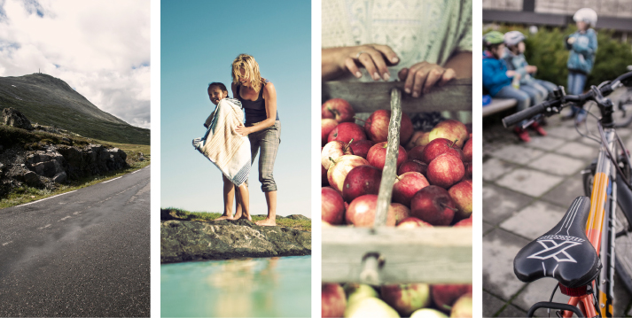

Retningslinjer
Foto er en av de viktigste virkemidlene for å skape en sterk visuell identitet for Telemark fylkeskommune. Det er derfor viktig at kvaliteten på fotografiene er av ypperste klasse og at man følger beskrevet fotostil så langt det lar seg gjøre.
Telemark fylkeskommune har merkevaren Telemarks fotostil som rettesnor. Bildene har en lun og varm fargetone, kontrastene er noe større og dybdefølelsen er dermed forsterket i motivet. Denne stilen gjennomføres i alle fotokategorier: Landskap, opplevelser, detaljer og fylkeskommunens virksomhetsområder.
Fotostilen skal brukes på rapportforsider.
Fotostilen trenger ikke brukes i artikler på www.telemark.no, i PowerPoint-presentasjoner, i sosiale medier, eller på bilder med eksternt opphav – for eksempel fra samarbeidspartnere.

Landskap
Bilder som gir oversikt: natur, årstid, luft, geografi, landemerker, arkitektur, kulturarv etc. Stor dybdeskarphet.
Opplevelser
Mennesker og følelser skal være i fokus: opplevelser fra reise, aktiviteter, kultur, fritid, idrett og friluftsliv, små øyeblikk etc. Litt lavere dypdeskarphet.
Detaljer
Bilder som framhever detaljenes kontraster: nærbilder, teksturer, stemning fra Telemark, uventede vinkler. Lav dybdeskarphet.
Virksomhetsområder
Bilder som viser tannhelse, areal, kollektivtrafikk, samferdsel, fylkesvei, jernbane, opplæring, kultur, miljø og klima, internasjonalt samarbeid, folkehelse og lignende. Miks av dokumentariske bilder, landskap og fokus på opplevelser og detaljer.